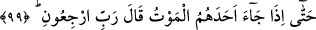

Bir hadiste şöyle buyrulmuştur: “Cehennemliklerden kendilerini dünyada henüz
görmediğim iki grup vardır:” yâni Rasûlullah (s.a.)’in asrının temizliğinden dolayı
onun asrında böyle kimseler yoktu. Böyle kimseler daha sonra ortaya çıktı.
“Biri, sığır kuyrukları gibi kırbaçlarla insanları döven bir topluluk.” Yani o iki
sınıftan birisi ellerinde kırbaçlar bulunan bir topluluktur. Hadiste bahsedilen bu
kimselerin zâlimlerin kapısında tıpkı köpekler gibi vurarak ve sövüp sayarak insanları
kovarak dolaşıp bekleyen kimseler olduğu da söylenmiştir.
“Diğeri,” iki sınıftan ikincisi, aslında “giyinmiş oldukları halde çıplak görünen,”
mânâ bakımından çıplak olan kadınlardır. Çünkü onlar altındakini belli eden ince
elbiseler giyerler. Ya da bu sözün mânâsı, onlar takvâ elbisesinden soyunmuşlardır,
demektir. Bunlar öyle kadınlar ki örtülerini gerilerine atarlar, böylece zamanımızdaki
kadınlar gibi göğüsleri açılır. Ya da bu sözün mânâsı, onlar Allah’ın nimetleri ile
donanmış oldukları halde şükürden uzaktırlar, demektir. Yani dünya nimetleri, salih
amel olmaksızın âhirette hiçbir fayda getirmez. Bu mânâ kadınlara has değildir.
“Meylettiren” yâni kendileriyle erkeklerin kalplerini fesâda meylettiren veya
rakkâselerin yaptığı gibi omuzlarını ve kıçlarını sallayan ya da yüzleri görünsün diye
başlarından peçelerini kaydıran kadınlardır.
“Meyleden” yâni erkeklere meyleden demektir. Ya da bunun mânâsı yürüyüşlerinde
çalım yaparlar, demektir.
“Ve başları deve hörgücüne benzeyen kadınlardır.” Başlarını başörtüleri veya külah
ile öyle büyütürler ki deve hörgücüne benzer. Ya da bunun mânâsı, başlarını kaldırarak
erkeklere bakarlar, demektir.
“İşte bu kadınlar cennete giremedikleri gibi, şu kadar uzak” yâni kırk yıllık
“mesafeden hissedilen kokusunu bile alamazlar.”[100]
99. Nihayet onlardan (müşriklerden) birine ölüm gelip çattığında der ki:
“Rabbim, beni geri gönder.”
“Nihayet onlardan (müşriklerden) birine ölüm gelip çattığında” Bu âyet, 96. âyetle
ilgili ve onun neticesidir. Yâni, müşrikler kötü sözler söylemeye ve yakıştırmaya devam
ederler, nihayet kim olursa olsun kâfir olarak onlardan birine, geri çevrilmesi mümkün
olmayan ölüm gelip çattığında ve âhiret hâlleri zuhûr ettiğinde îman ve amel gibi elden
kaçırdığı şeylere üzülerek “der ki: “Rabbim, beni geri gönder;” beni dünyaya geri
çevir.
“
” kelimesinde vav muhâtabı tâzim içindir. Çünkü Araplar, şânı yüce olan bir
kimseye de çoğul siygası ile hitap ederler. Burada “Tâzim için olan çoğul siygası,
birinci tekil şahıs dışındakiler içindir.” diyen kimsenin sözü de reddedilmiş olmaktadır.